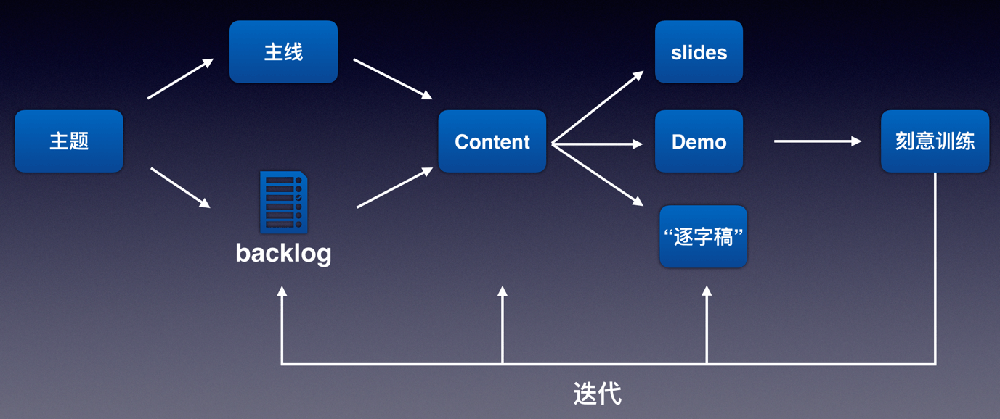

《如何做好一场技术演讲》
唯有精心准备+刻意训练方能成就精彩演讲。
沟通的本质是让对方轻松地弄明白他原来并不知道的东西，更进一步，让对方通过自己已经懂的知识理解他原来并不懂的东西。
在幻灯片设计上，通常要注意整齐美观。如果是画图，图上的线和布局要注意对称，如果是文字，要注意缩进。程序员们往往不以为意，但如果你告诉他，这就好比代码风格上合理缩进能提高代码的可读性，他立刻就领会了，而且会非常认同。
演讲最重要的就是主题，所以首当其冲，你需要明确自己的主题。这里面涉及到你与出口人的沟通，以及你对大会的了解。比如，听众的组成是什么样的？参会者对这个领域的了解程度？听众们想听什么？最关键的是通过本次演讲，给听众带来什么价值？
技术类分享模式：
- Who：自我介绍，让听众了解自己，建立连接，1页
- What&When：今天要分享的主题，通过简短介绍吸引听众的注意力、好奇心，1-2页
- Why：为什么要做这个架构改造、技术升级，整个项目的背景是什么样的，结合听众的了解，做特定的介绍，1页
- How：深入浅出3-4个最核心的内容点，当然为了全面性，你可以都罗列出来，但介绍的重点建议控制在3-4项，每项2-3页
- Future：让大家了解你未来的计划，你对技术趋势的看法等等，1页
- Recap：对今天的主题再做一个回顾，让听众加深对核心内容记忆，1页
演讲刻意训练：
- 找安静的地方，自我练习。手机录音、启动时。
- 请信任的朋友来试听。
- 公司内部试讲。
- 冥想。


避免演讲紧张：
- 紧张情绪并不可怕，紧张是本能
- 演讲之前要知已知彼，了解自己的优势
- 演讲内容要有价值
- 适可而止，不可贪多
- PPT只是配角
- 别让正式演讲是你的第一次，多练习
- 把握好最初的五分钟
你用生硬的道理去告诉一个人怎么做，远不如通过生动有趣的故事或类比的案例效果好，人们在听故事的时候更容易产生共情作用，也更容易理解你想表达的信息。
- 清晰的开始、过程和结尾
- 具备有章可循的结构
- 通过某个情节来吸引听众的注意力，起承转合
- 开始和结束比中间部分短
讲故事赋比兴：
- 赋：铺陈直述，把思想感情事物细节平铺直叙地表达出来。淋漓尽致地细腻铺写，或渲染气氛和情绪。
- 比：类比，以彼物比此物，由一件事引入另一件事，通过形象的类比让人们更容易接受你的观点。
- 兴：托物起兴，加以联想和展望，引出演讲者最终想表达的事物、思想和情感。一般用于演讲的结尾。
凡是能让人在脑海中产生画面感的话语或文字就是故事。
- 具体让人产生画面大吃一惊，产生更多的钩子
- 具体让人更容易产生情绪
- 具体让人产生可信感
共情效应：我们天生有通过模仿对方的神态和肢体理解他的立场、体验其感受的习惯。
- 异常面、真实面、激情面（腰以下、腰腹部、肋骨及以上）
- 眼神交流、伸出一只手（一个一个盯着看，对方入戏后再换下一个）
- 声音弧度
近因效应：人对演讲末尾部分的印象最为深刻，记忆也最为清晰。要想让听众记住你期望他记住的2-3个关键点，以达到分享的目的，在收尾时的总结和强调就至关重要。
一场漂亮的技术演讲：
- 提前了解听众的诉求（少原则理论，多生动案例）
- 认识到紧张是正常的（错了、漏了只有你自己知道，多微笑）
- 好的开场是成功的一半
- 采用一个安全的内容结构（问题缘起 - 方案 - 优化 - 总结）
- PPT内部呈现要清晰简洁
- 把控好整体节奏（语速放慢，多练习）
- 收尾时要强调重点
- 回答提问要讲究技巧（往自己熟悉的方向引）
《编辑训练营》


判断好标题：
- 真实可信
- 冲突感
- 和用户产生共鸣
怎么取一个好标题：
- 巧用数字，把复杂的概念具象化
- 设置悬念，引发用户好奇心
- 扩大外沿，增加潜在受众群体
- 移动、Web端，相同内容两种标题

《爱上跑步》
初学者两步一吸两步一呼，跑一段时间后三步一吸三步一呼，最好口鼻同时呼吸
正确的摆臂应该是肩膀放松状态下，以肩关节为轴的，大臂和小臂成 90 度角，大臂带动小臂前后垂直摆动。抬起时，大拇指不要超过眉毛，回来时，大拇指不要越过躯干。
正确的长跑姿势，应该是核心收紧，臀大肌和大腿后侧肌肉发力，以髋关节为轴，带动膝关节和踝关节向前跑动。
长跑，基本上是脚跟先落地，而且多数都是由脚的外侧先着地，过渡到内侧，这也是我们常说的全脚掌跑步法。
对普通跑者来说，选跑鞋首先考虑的不是穿上它有多炫酷、能帮我们跑得有多快，而是如何跑得更长久，不受伤。保护性能好的鞋，一般有两个特点：
- 鞋底偏厚，抗缓冲能力强
- 鞋底较宽，且有韧性，不易左右旋转和对折
《乔新亮的CTO成长复盘》
大部分技术人的职业发展可以笼统划分为三个阶段：
- 做事（Do）。工作偏向执行，主要负责解决个人承担的技术任务
- 带团队（Manage）。偏向管理，主要负责协调组织，让团队实现更大价值
- 业务决策（Lead）。思考公司的业务发展，能站在公司的角度进行战略决策，更像一个创业者
薪资只是工作的附属，工作的真正报酬是成长。而所谓的涨薪，不代表你的工作岗位更值钱了，而是你的个人能力足以匹配更值钱的岗位。
生产环境出现事故，与员工的责任心和能力没有绝对因果关系，故而不能靠单一的惩罚条例，其背后本质，是管理者是否能够体系化地解决问题。
思考是提问的绝对前提：
横向维度：
- 将复杂问题拆解成足够细化的模块
- 针对每个模块，判断自己是否有足够能力实现
- 根据拆解情况和实现方式，制定一种或多种技术方案
- 对一种或多种技术方案进行快速而谨慎的验证
- 用财务思维考量技术方案背后的成本和效益
- 对技术方案的选择、实施进行决策
纵向维度：
- 初级问题：一般都是纯粹的技术实现问题，只是复杂程度不同
- 中级问题：复杂度上升，开始涉及到多模块、多业务部门甚至是跨公司的协调，一般需要经历立项会
- 高级问题：需要协调多方资源，站在公司整体层面，为公司利益负责而解决问题
选择决定上限，努力决定不限。选择还要拥抱不确定性，而努力还要负责将不确定性变成确定性。

好的立项：
- 目标清晰：每个业务目标、产品目标、技术目标都要清晰且可量化
- 责任到人：上述每个目标都要责任到人，不能都是项目经理扛
- 承诺到位：如果需要外部组织配合，要得到外部组织的明确承诺
协同，就是让所有人向着同一个目标狂奔，并妥善解决奔跑过程中的合作问题。允许试错/犯错、信息极度透明、事后的客观复盘、绩效评定的公开化和透明化，不断地持续做这些管理工作，团队成员会起来越互相信任。
管理是为了不管，管理的目的是为了将不那么能自我驱动的人，变更更主动、更积极，而不是当个监工，越管越严。
真正的向上管理，是培养全局思维，把自己的思维拔高，和老板站在同一个维度看待问题，同时优质密切、顺畅的沟通。
成长就是为了变得更优秀，而优秀的含义是：做两样的事情，表现比别人更好。没有放弃，就意味着没有真正聚焦；有舍弃，才有收获。
工作/需求做不完，初中级管理才和高级管理者应该区别看待。前者主要解决效率问题，后者主要解决价值问题。同时，效率问题要和价值问题围绕同一目标进行对齐。
洞察人性是要树立”以人为本“的理念，了解产品使用者的真正诉求，用户通过使用产品，会觉得自己更棒了，让自己变得更卓越。先成就用户，然后成就产品。
产品思维六步：
- 到底要交付一个什么样的产品？
- 明确产品的用户到底是谁？
- 明确服务契约
- 将产品打磨至卓越：一站一键一秒
- 要习惯于成就用户，时刻谨记：以人为本
- 关注数据，持续完善
高可用意味着对系统全部元素、连接都进行高可用设计，在物理实例层面主要表现为冗余和集群设计，在代码逻辑层面，方法则多种多样。当你的资源和精力不足以实现全链路高可用时，提供”降级服务“和”熔断服务“，优先保证高可用，其次保证高可靠。
《职场求生攻略》
如果一个事情需要别的部门配合，那么优先做。比如申请资源，和自己的上游讨论需求等等。这样一方面可以让别人尽早开始工作，另一方面也可以尽早交换信息，避免日后翻车。
程序员交流技巧：
- 换位思考，注意受众
- 交流要带有足够的信息
- 先说重点和结论
发挥主观能动性：
- 交付思维：站在用户的角度，交付下下解决用户问题的软件系统
- 注意沟通：自己的新想法和需求方讨论确定，不要单方面的想，自顾自的做
- 注意时间：完成好过完美
跟对人：
- 认同彼此的价值观和人格：价值观和性格会被经理影响；有担当；优秀、真诚、公平。
- 定期和你交流：有一对一的会议；表扬做的优秀的地方；指出做得不好的地方，并通过沟通，给出改进方案；给出让你发展到下一阶段的建议；
- 可以互相讨论甚至争论：发挥主观能动性的前提；能够得到更好、更完整的结论
- 资源和利益的分配：给手的人新的机会；给手人发展的时间；争取利益，并能公平分配
想要获得超额回报，最根本的逻辑，是要成为公司核心竞争力的一部分，要能够在公司创建价值的链条上成为重要的、不可替代的一环。仅仅是重要还不行，如果很容易被替代的话，能分到手的利益很可能也只是象征性的。
技术骨架的构成：
- 核心架构设计：这个技术有哪些核心的架构设计
- 功能模型：这个技术有哪些功能，功能的接口是什么
- 状态模型：系统在运行时有哪些状态，状态之间的变化原因是什么
- 数据模型：这个技术是怎么组织数据的，是怎么处理数据的
- 线程模型：这个技术有哪些线程，分别是做什么的
吃透技术：熟练使用、精准掌控、知根知底
方式方法可以妥协，原则和目标必须坚持